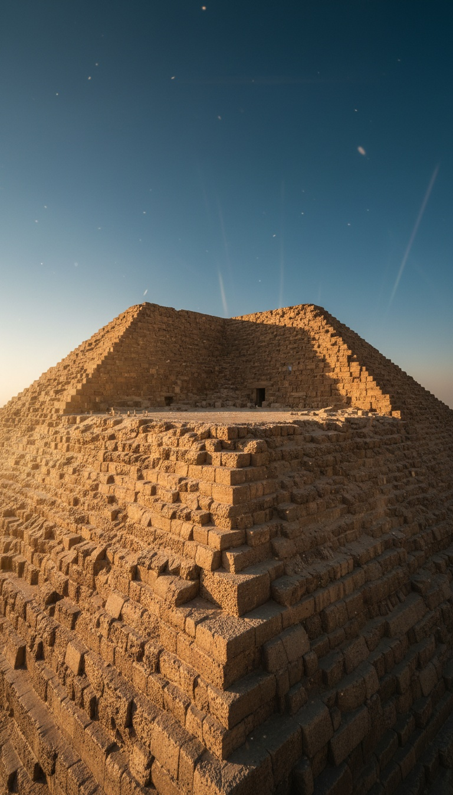

The Great Pyramid has no top. And the oldest surviving eyewitness description of it says the top was already gone before Julius Caesar was born.
Almost nobody knows this. The pyramid you see in every photograph, every travel brochure, every documentary establishing shot, is missing the single most sacred stone in Egyptian cosmology. And it has been missing for at least two thousand years.

The Summit Is a Platform, Not a Point
Walk to the base of the Great Pyramid at Giza today and look up. What you see at the peak is not a peak. It is a flat stone platform roughly nine meters across, open to the sky, where a pyramidion should sit.
The pyramid originally stood 146.6 meters tall according to the Egyptian Ministry of Tourism and Antiquities. It now measures 138.5 meters. The missing height is not just weathered casing stones. The apex itself is gone.
Every other major pyramid in Egypt was designed to terminate in a single carved capstone called a pyramidion. Khufu's does not terminate. It stops.
Diodorus Siculus Saw the Same Flat Top You See Now
The Greek historian Diodorus Siculus traveled through Egypt sometime between 60 and 56 BCE. In Book I of his Bibliotheca Historica, he described the Great Pyramid in detail, including its summit.
He wrote that the top of the pyramid formed a small platform, each side measuring about six cubits. Six Egyptian royal cubits is roughly 3.1 meters. The platform has since eroded outward to about nine meters, but Diodorus is describing a flat top, not a point.
That places the missing capstone before 60 BCE. Before the Roman conquest of Egypt. Before Cleopatra. The stone was already gone when the earliest tourists arrived.
Other Pyramidions Survived. Khufu's Never Existed in the Record
The pyramidion of Amenemhat III, dated to around 1850 BCE, sits in the Egyptian Museum in Cairo, catalog number JE 35133. It is polished black granite, roughly 1.4 meters tall, inscribed with hieroglyphs invoking the sun god Ra.
The pyramidion of Khendjer from the 13th Dynasty is also in the Cairo Museum. Fragments of the pyramidion belonging to the Red Pyramid of Sneferu, Khufu's father, were recovered at Dahshur and reconstructed on site.
Khufu's pyramidion has never been located. Not one fragment. Not one inscription referencing its removal. Not one ancient text describing it in place. For the largest pyramid ever built, the capstone leaves zero archaeological footprint.
The ancient Egyptians called the capstone the Benben. A physical piece of heaven touching earth. If Khufu's tomb was ever finished, heaven was left incomplete.
The Benben and the Missing Piece of Heaven
The Benben stone was the sacred object housed in the temple of Ra at Heliopolis. It represented the primeval mound that rose from the waters of chaos at the moment of creation. Every pyramidion was understood to be a replica of the Benben.
Egyptologist Miroslav Verner, in The Pyramids: Their Archaeology and History, notes that pyramidions were often gilded so they would flash in the sunrise and be visible from Heliopolis roughly 25 kilometers away. This was not decorative. It was theological.
For Khufu's builders to leave the largest pyramid ever constructed without a Benben is like building a cathedral and forgetting the altar. It would have been a completed structure with the ritual center deliberately absent.
The 1999 Millennium Capstone Project That Vanished
In 1999, the Egyptian government under President Hosni Mubarak announced a plan to mark the millennium by lowering a gilded capstone onto the Great Pyramid's summit via helicopter at midnight on December 31st. The project was covered by Reuters, the Associated Press, and the BBC in the months leading up to the date.
Zahi Hawass, then Undersecretary of State for the Giza Monuments, was quoted in the Egyptian press supporting the ceremony. A replica pyramidion was reportedly prepared. The helicopter route was planned.
The project was cancelled in the final weeks of December 1999. No detailed official explanation was released. Egyptian authorities cited vague concerns about the structural impact and objections from Islamic scholars who called the ceremony Masonic symbolism. The capstone never went up.
Three Theories, None of Them Clean
Theory one is that the capstone was looted for its gold in antiquity. This fails because Diodorus in 60 BCE describes a flat platform, not a fresh scar. Any looting would have to predate the earliest Greek tourists, which is an extraordinary claim with no supporting evidence.
Theory two is that the pyramid was never finished. This contradicts the finished condition of the Tura limestone casing stones documented by Herodotus a century before Diodorus, and the finished granite work inside the King's Chamber.
Theory three is that the summit was deliberately left open. In this reading, the Great Pyramid was not a tomb at all, or not only a tomb. It was a structure designed to remain ritually incomplete at the top, for reasons the surviving Egyptian record does not explain.
Every pyramid smaller than Khufu's has a documented capstone or capstone fragment. The largest pyramid ever built by human hands has neither. The oldest tourist to describe it says the summit was already flat. The most recent attempt to complete it was quietly cancelled with no public reason.
Something about the top of that pyramid was never meant to be closed. Or something was up there in 1999 that the people planning the ceremony saw at the last minute and decided to leave alone. Which one do you think it is?
Before you go
7 books the Vatican doesn't want you reading. Free PDF — the texts they cut, with sources. Joined by 140+ Inner Circle members.
No spam. Unsubscribe anytime.
Go deeper
The Hidden Canon, Vol. I — Enoch. Jubilees. Thomas. Mary. Judas. 90 pages, 14 chapters, every receipt cited. The books your Bible quietly removed.
Read the Canon →Books that informed this investigation
As an Amazon Associate, Hidden Epoch earns from qualifying purchases. Cost to you: nothing.
Research safely
The VPN we use to research without being tracked. First 3 months free.
Get NordVPN →